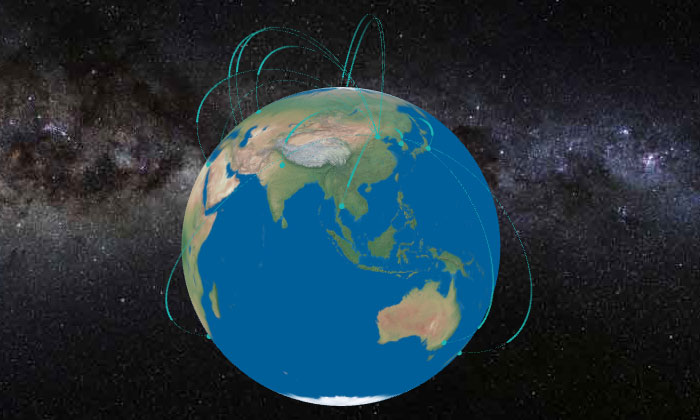

概况如下：
1、SphereGeometry实现自转的地球；
2、THREE.ImageUtils.loadTexture加载地图贴图材质；
3、THREE.Math.degToRad，Math.sin，Math.cos实现地图经纬度与三位坐标x，y，z之间的转换；
4、轨迹中根据分段数与相应国家gdp值来实现城市标记。
效果图如下：

预览地址：three.js实现球体地球城市模拟迁徙
初始化场景、相机、渲染器，设置相机位置，初始化光源，光源采用HemisphereLight，设置光源位置为场景中心位置，并将光源加入场景中
// 初始化场景
var scene = new THREE.Scene();
// 初始化相机，第一个参数为摄像机视锥体垂直视野角度，第二个参数为摄像机视锥体长宽比，
// 第三个参数为摄像机视锥体近端面，第四个参数为摄像机视锥体远端面
var camera = new THREE.PerspectiveCamera(20, dom.clientWidth / dom.clientHeight, 1, 100000);
// 设置相机位置，对应参数分别表示x，y，z位置
camera.position.set(0, 0, 200);
var renderer = new THREE.WebGLRenderer({
alpha: true,
antialias: true
});
// 设置光照
scene.add(new THREE.HemisphereLight('#ffffff', '#ffffff', 1));设置场景窗口尺寸，并且初始化控制器，窗口尺寸默认与浏览器窗口尺寸保持一致，最后将渲染器加载到dom中。
// 设置窗口尺寸，第一个参数为宽度，第二个参数为高度
renderer.setSize(dom.clientWidth, dom.clientHeight);
// 初始化控制器
var orbitcontrols = new THREE.OrbitControls(camera,renderer.domElement);
// 将渲染器加载到dom中
dom.appendChild(renderer.domElement);定义地球及其材质，地球通过SphereGeometry来实现，通过ImageUtils来导入贴图。
// 定义地球材质
var earthTexture = THREE.ImageUtils.loadTexture(earthImg, {}, function () {
renderer.render(scene, camera);
});
// 创建地球
earthBall = new THREE.Mesh(new THREE.SphereGeometry(earthBallSize, 50, 50), new THREE.MeshBasicMaterial({
map: earthTexture
}));
scene.add(earthBall);标记地点经纬度坐标与三维x，y，z坐标转换方法。
// 经纬度转换函数，longitude表示经度，latitude表示唯独，radius表示球体半径
var getPosition = function (longitude, latitude, radius) {
// 将经度，纬度转换为rad坐标
var lg = THREE.Math.degToRad(longitude);
var lt = THREE.Math.degToRad(latitude);
var temp = radius * Math.cos(lt);
// 获取x，y，z坐标
var x = temp * Math.sin(lg);
var y = radius * Math.sin(lt);
var z = temp * Math.cos(lg);
return {
x: x,
y: y,
z: z
}
}添加两个城市之间轨迹的方法。
// 添加轨迹函数
var addLine = function (v0, v3) {
var angle = (v0.angleTo(v3) * 180) / Math.PI;
var aLen = angle * 0.5 * (1 - angle / (Math.PI * earthBallSize * parseInt(earthBallSize / 10)));
var hLen = angle * angle * 1.2 * (1 - angle / (Math.PI * earthBallSize * parseInt(earthBallSize / 10)));
var p0 = new THREE.Vector3(0, 0, 0);
// 法线向量
var rayLine = new THREE.Ray(p0, getVCenter(v0.clone(), v3.clone()));
// 顶点坐标
var vtop = rayLine.at(hLen / rayLine.at(1).distanceTo(p0));
// 控制点坐标
var v1 = getLenVcetor(v0.clone(), vtop, aLen);
var v2 = getLenVcetor(v3.clone(), vtop, aLen);
// 绘制贝塞尔曲线
var curve = new THREE.CubicBezierCurve3(v0, v1, v2, v3);
var geometry = new THREE.Geometry();
geometry.vertices = curve.getPoints(100);
var line = new MeshLine();
line.setGeometry(geometry);
var material = new MeshLineMaterial({
color: metapLineColor,
lineWidth: 0.1,
transparent: true,
opacity: 1
})
return {
curve: curve,
lineMesh: new THREE.Mesh(line.geometry, material)
}
}轨迹上运动的小球实现方法。
var animateDots = [];
// 线条对象集合
var groupLines = new THREE.Group();
// 线条
marking.children.forEach(function (item) {
var line = addLine(marking.children[0].position, item.position);
groupLines.add(line.lineMesh);
animateDots.push(line.curve.getPoints(metapNum));
})
scene.add(groupLines);
// 线上滑动的小球
var aGroup = new THREE.Group();
for (var i = 0; i < animateDots.length; i ++) {
for (var j = 0; j < markingNum; j ++) {
var aGeo = new THREE.SphereGeometry(slideBallSize, 10, 10);
var aMaterial = new THREE.MeshBasicMaterial({
color: slideBallColor,
transparent: true,
opacity: 1 - j * 0.02
})
var aMesh = new THREE.Mesh(aGeo, aMaterial);
aGroup.add(aMesh);
}
}
var vIndex = 0;
var firstBool = true;
function animationLine () {
aGroup.children.forEach(function (elem, index) {
var _index = parseInt(index / markingNum);
var index2 = index - markingNum * _index;
var _vIndex = 0;
if (firstBool) {
_vIndex = vIndex - index2 % markingNum >= 0 ? vIndex - index2 % markingNum : 0;
} else {
_vIndex = vIndex - index2 % markingNum >= 0 ? vIndex - index2 % markingNum : metapNum + vIndex - index2;
}
var v = animateDots[_index][_vIndex];
elem.position.set(v.x, v.y, v.z);
})
vIndex ++;
if (vIndex > metapNum) {
vIndex = 0;
}
if (vIndex == metapNum && firstBool) {
firstBool = false;
}
requestAnimationFrame(animationLine);
}
scene.add(aGroup);标记地点通过position值来实现位置的确认，动画使用requestAnimationFrame来实现。
// 执行函数
var render = function () {
scene.rotation.y -= 0.01;
renderer.render(scene, camera);
orbitcontrols.update();
requestAnimationFrame(render);
}